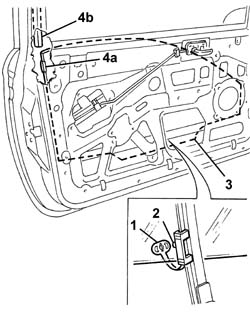
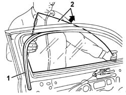

7005D14 front side door descending window glass - r r with door panel (and mount frame) removed
- Path
- Procedures > 70 FITTINGS > 7005 PASSENGER COMPARTMENT FRONT SIDE DOORS > 7005D front side door window glasses > 7005D14 front side door descending window glass - r r with door panel (and mount frame) removed
- Kind
- repair procedure (removal / refitting; the operation number is the code)
- Applies to
- all engines; all production periods
- Interactive page
- https://sloeber94.github.io/elrnDB-a147/en/#/3025659
Applies to: all engines; all production periods
 Removing
Removing
 Refitting
Refitting7005A04 front side door water guard protection - r r or replace with door panel removed
1. Lower the window until the safety retainer can be disconnected.
2. Disconnect the window glass from the drive pin.
3. Lower the window glass completely, by hand.
4. Release the fixing element (4a) for the window from the rear section (4b) of the run channel.

Applies to: all engines; all production periods
1. Remove the rear section of the inner seal.
2. Withdraw the window glass from the door frame.

Applies to: all engines; all production periods
Refitting
RemovingCheck the condition of the window, the fixing piece, the run channel, the drive pin and the safety retainer.
Fit the window in the door frame.
Fit the rear section of the inner seal.
Engage window's fixing piece in the rear of the run channel and slide the window glass upwards.
Move the window until it can be connected to the drive pin.
Connect the window's safety retainer.
Check that the window works properly.
7005A04 front side door water guard protection - r r or replace with door panel removed
Topics linked from this page (2)
- 5570T90 front speaker - r r
- 7005A04 front side door water guard protection - r r or replace with door panel removed